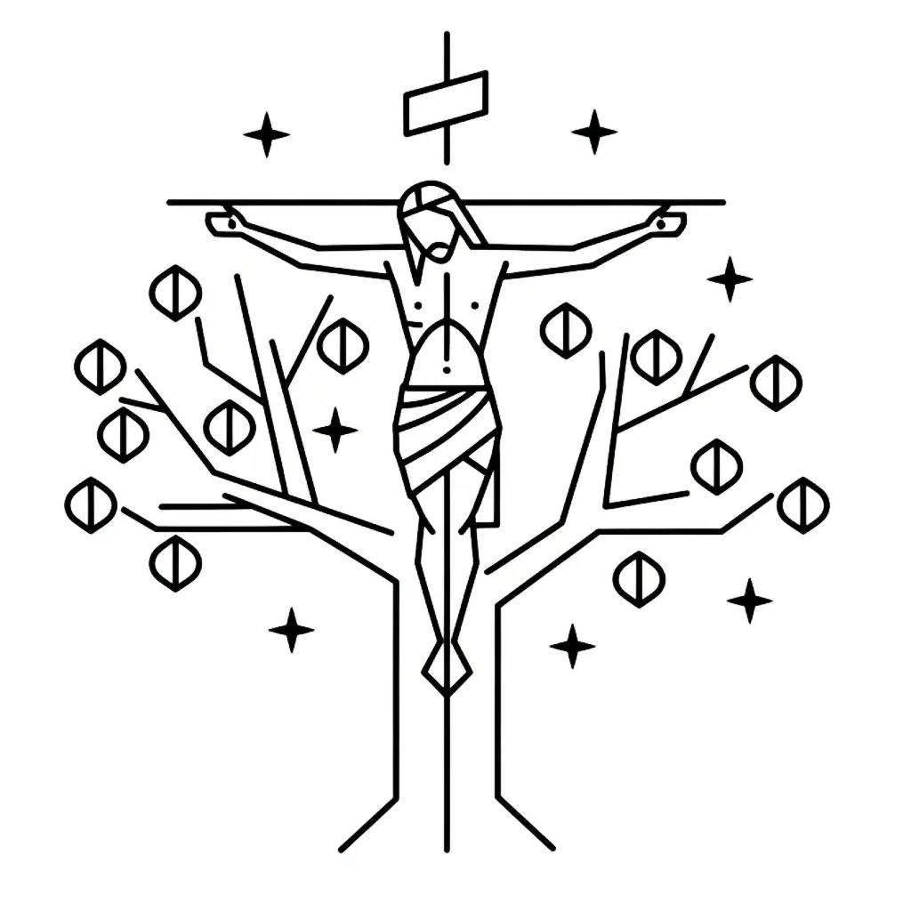

The crucifixion of Jesus is one of the most recognisable moments in the Bible. Traditionally presented as a Roman execution by means of a cross, it also appears—especially in Acts and the Epistles—as taking place on a tree. These are not just interchangeable words. Each carries specific symbolic significance that opens up the inner psychological meaning of the event, especially when read through the Law of Assumption as taught by Neville Goddard.The Cross in the Gospels
The four Gospels use the Greek word σταυρός (stauros), meaning an upright stake or cross, to describe the instrument of execution.
-
“He went out with his cross on him to the place which is named Dead Man’s Head (in Hebrew, Golgotha).” (John 19:17, BBE)
-
“And they made one Simon of Cyrene, who was coming in from the country, go with them, to take his cross.” (Mark 15:21, BBE)
Here the cross is represented as a physical object, but it also functions as a symbol: a structure upon which something is fixed, nailed, and held in place. To “carry the cross” is to shoulder the burden of a chosen assumption.
The Tree in Acts and the Epistles
Beyond the Gospels, the word changes. ξύλον (xylon), meaning tree or wood, is used in several key New Testament passages:
-
“The God of our fathers gave Jesus back to life, whom you had put to death, hanging him on a tree.” (Acts 5:30, BBE)
-
“And we are witnesses of all the things which he did in the country of the Jews and in Jerusalem: whom they put to death, hanging him on a tree.” (Acts 10:39, BBE)
-
“Christ has made us free from the curse of the law, having become a curse for us: because it is said in the Writings, A curse is on everyone who is hanged on a tree.” (Galatians 3:13, BBE)
-
“He took our sins on himself, giving his body to be nailed to the tree, so that we, dead to sin, might have a new life in righteousness...” (1 Peter 2:24, BBE)
This term invites the reader to connect the crucifixion back to the earliest symbolic tree in the Bible—the Tree of the Knowledge of Good and Evil, and by extension, the Tree of Life.
Eden: The Original Tree of Division
In the Garden of Eden, two trees are named:
-
The Tree of Life – representing direct, unbroken awareness of unity, wholeness, and eternal being.
-
The Tree of the Knowledge of Good and Evil – representing duality, judgement, separation, and limitation.
To eat from the latter was to fall from pure awareness into the divided world of opposites. This is the origin of psychological fragmentation—the belief in “good” and “bad”, “worthy” and “unworthy”, “near” and “far”—and it becomes the basis of all inner suffering.
When Paul and Peter refer to Jesus being hanged on a “tree,” they are not just invoking Deuteronomic law. They are reawakening the Eden story. Jesus, the embodiment of “I AM,” is hung upon the tree as the redemptive reversal of the fall. He willingly enters the condition of separation, contradiction, and human judgement—the very condition initiated by the Tree of Knowledge—in order to transform it from within.
Symbolism Interpreted Psychologically
Neville Goddard taught that the crucifixion is not an historical event, but a psychological drama.
“The crucifixion is the fixation of the belief that I am this.”
— Neville Goddard
From this perspective:
-
The cross is the mental burden of your chosen assumption.
-
The tree is the human tendency to judge by appearances—the divided perception originating in Eden.
-
The nails are the conviction and emotional intensity that bind you to the assumption.
-
The spear is the pain of remaining faithful to your desire in the face of contradictory evidence.
-
Death is the letting go of the old identity.
-
Resurrection is the fulfilment of the assumed state.
Jesus on the tree is consciousness itself accepting the curse of human division so that it may redeem it. It is the movement of imagination from fragmentation back to unity.
The Carpenter and the Cross
It is no accident that Jesus is called a carpenter in the Gospels:
-
“Is not this the woodworker, the son of Mary, the brother of James and Joses and Judas and Simon?” (Mark 6:3, BBE)
This detail, often treated as incidental, is deeply symbolic. A carpenter is one who works with wood—one who shapes, joins, fixes, and constructs. Within the psychological meaning of Scripture, this suggests that Jesus, the personification of "I AM," is also the builder of internal structures—the shaper of identity and consciousness.
To “carry the cross” is to take responsibility for your self-concept, and to be “crucified” is to have your chosen assumption fixed in imagination—held in place like a wooden structure. Who better to illustrate this process than the carpenter, whose craft is to take rough, formless material and construct a new form from it?
And just as the cross or tree represents the place where imagination is fixed, so the carpenter is the symbolic agent who does the fixing. Not with nails and hammers, but through mental conviction, assumption, and inner work.
Thus, Jesus the carpenter is not just a profession from his earthly background—it reveals the function of consciousness as the one who builds and redeems. He is the one who nails the new identity to the tree of divided human perception, transforming it into the Tree of Life.
Fixing the Assumption: The True Inner Crucifixion
When you assume a new state—“I am wealthy,” “I am healed,” “I am loved”—you symbolically take up your cross. You accept the burden of remaining faithful to that state, though your senses may suggest the opposite. You are crucified when that assumption becomes so real to you that you will not come down from it.
This is your tree. Like Eden, it presents a choice: remain in the divided perception of “what is” versus “what is not,” or return to the Tree of Life—the creative unity of imagination.
Conclusion: The Tree Fulfilled
The crucifixion is the fulfilment of what was initiated in Eden. The fall into duality began with eating from the Tree of the Knowledge of Good and Evil. The redemption from that fall is symbolised in Christ hung upon a tree—an image that is both curse and cure.
To live by the Law of Assumption is to re-enter Eden, not as an untested state of innocence, but as one who has passed through the fragmentation of judgement and returned to unity through deliberate awareness.
The tree, once a symbol of exile, becomes the place where assumption is fixed, imagination is crucified, and the old self is buried—so that something new can rise.